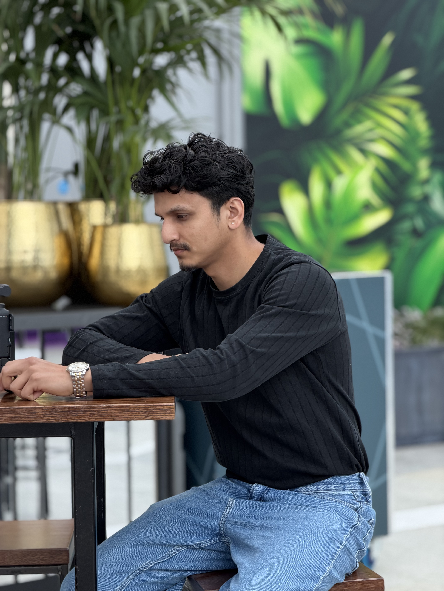

From the hills of Nepal to the labs of London, I’m Deepak Chand a Robotics and embedded systems engineer who builds intelligent machines that solve real-world problems.
Now pursuing my MSc in Electronic and Robotic Engineering at the University of West London, I’ve spent six years turning ideas into impact. I designed Nepal’s first locally developed medical device the Infant Radiant Warmer NAYNO NANI now saving lives across 23 rural districts with precise PID temperature control. I also created an SMS controlled automated gate-valve for remote Himalayan villages and an AI-powered autonomous service robot using SLAM, visual navigation, and face recognition. At Airbotix Technology, I modified ArduPilot firmware, developed custom drone fleets for light shows and surveillance, and advanced indoor visual SLAM navigation. My work on 3D sound-source localization for disaster rescue was published at ISCRAM 2020, and my competition robots earned multiple “Best Design,” “Best Engineering,” and “Best Shuttlecock” awards at ABU ROBOCON. I thrive at the intersection of embedded C/C++, ROS, AI, and controls. Driven by creating smart, affordable solutions that bridge innovation and real impact from mountain villages to smart cities. Let’s build the future together.
My technical foundation spans statistical modelling, deep learning, and natural language processing. I enjoy building end-to-end ML pipelines — from raw data ingestion and feature engineering through model training, evaluation, and production deployment.
I write about mathematics, data science, and artificial intelligence on my blog, breaking down complex ideas into clear, accessible explanations. I believe that the best engineers are also good communicators.
I'm particularly excited about large language models, probabilistic inference, and the theoretical underpinnings of modern AI. My goal is to contribute to research and products that push the frontier of what machines can understand and do.